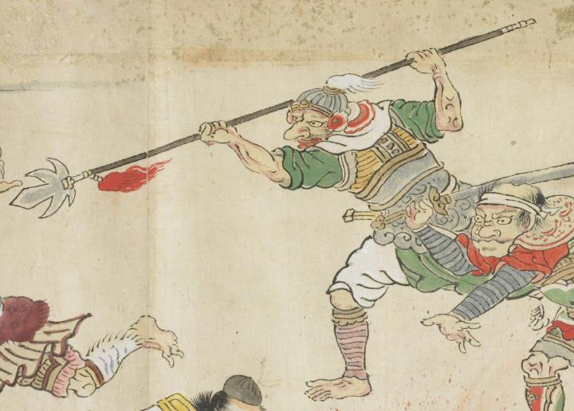

鼠色の兜をかぶり、大きな槍を掲げている。長い鼻をしており、目を大きく見ひらいている。緑色の衣を身にまとい、大きな鎧をつけている。
出典：親書誌：U426_nichibunken_0079：酒天童子絵巻；シュテンドウジエマキ／日付：2006／資源識別子：U426_nichibunken_0079_0014_0009
Copyright (c)2010- International Research Center for Japanese Studies, Kyoto, Japan. All rights reserved.